Callsign Catch
Photo credits
The type photos on the cards come from Wikimedia Commons, shared by their photographers under free licences. Thank you to every one of them. Each card names its photographer and licence, and here they all are in one place. Some photos show a close relative of the type, such as another model in the same family.
When you catch a plane, the card can also show a photo of that exact aircraft from Planespotters.net, credited to its photographer with a link to the photo.
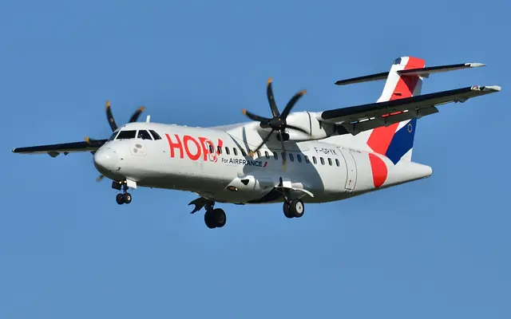
ATR 42-300
Laurent ERRERA from L'Union, France, CC BY-SA 2.0 ATR 42-500
ATR 42-500
Laurent ERRERA from L'Union, France, CC BY-SA 2.0 ATR 72 (200 series)
ATR 72 (200 series)
Ken Fielding, CC BY-SA 3.0 ATR 72-500
ATR 72-500
Ken Fielding, CC BY-SA 3.0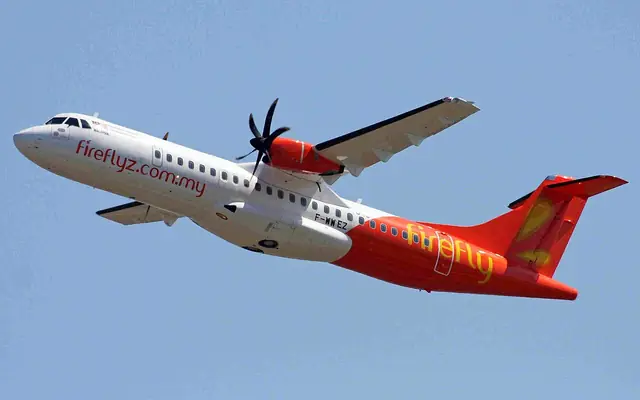
ATR 72-600
Ken Fielding, CC BY-SA 3.0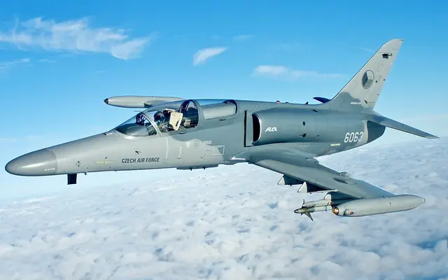
Aero L-159 ALCA
Milan Nykodym from Kutna Hora, Czech Republic, CC BY-SA 2.0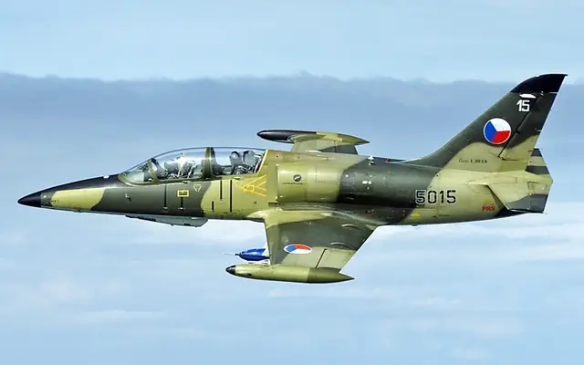
Aero L-39 Albatros
Milan Nykodym, CC BY-SA 4.0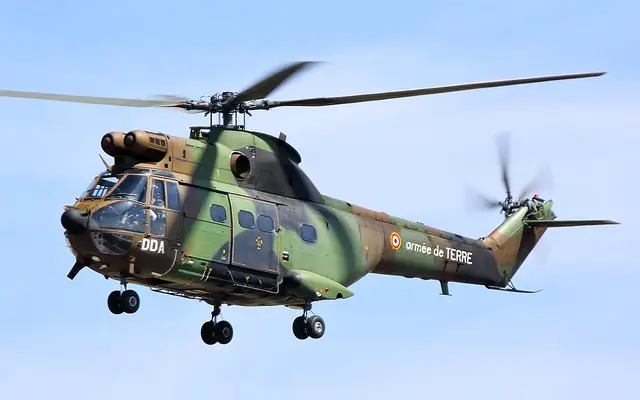
Aerospatiale SA 330 Puma
Tim Felce (Airwolfhound), CC BY-SA 2.0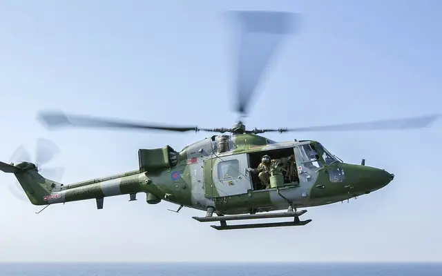
AgustaWestland AW159 Wildcat
Sgt. Christopher Q. Stone, Public domain Airbus A220-100
Airbus A220-100
Romain COUPY, CC BY-SA 4.0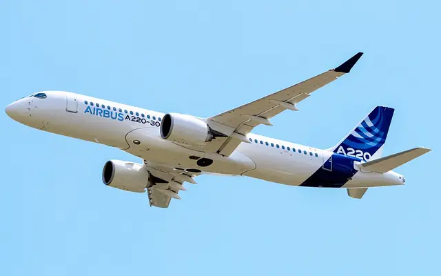
Airbus A220-300
Romain COUPY, CC BY-SA 4.0 Airbus A300-600
Airbus A300-600
Aero Icarus from Zürich, Switzerland, CC BY-SA 2.0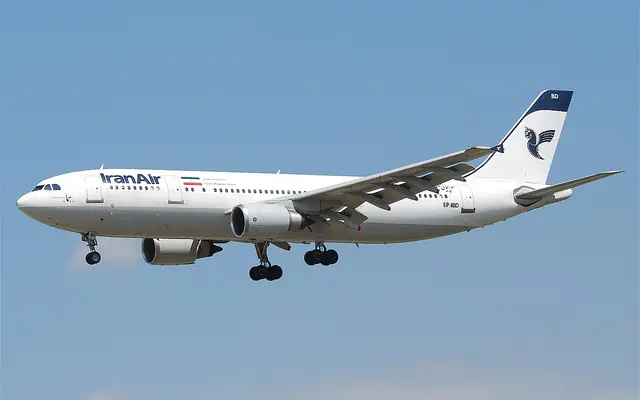
Airbus A300B4
Aero Icarus from Zürich, Switzerland, CC BY-SA 2.0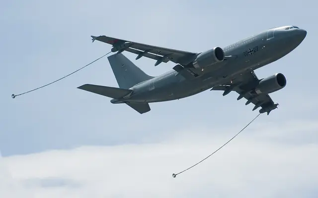
Airbus A310 MRTT
Dmitry A. Mottl, Public domain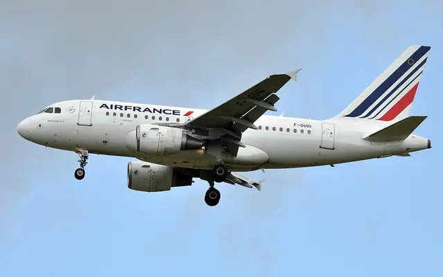
Airbus A318
ERIC SALARD from Paris, FRANCE, CC BY-SA 2.0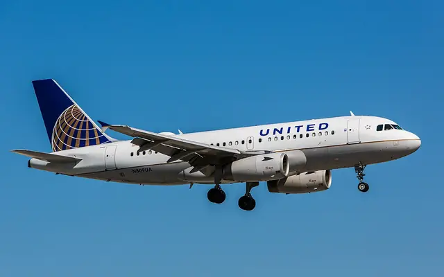
Airbus A319
Joao Carlos Medau from Campinas, Brazil, CC BY 2.0 Airbus A319neo
Airbus A319neo
BriYYZ from Toronto, Canada, CC BY-SA 2.0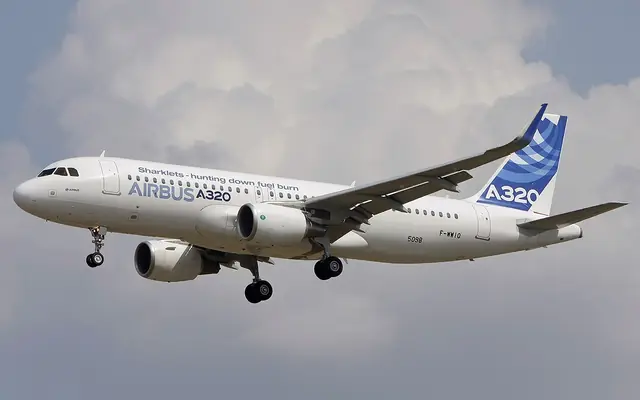
Airbus A320
Pedro Aragão, CC BY-SA 3.0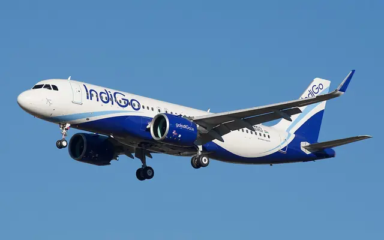
Airbus A320neo
BriYYZ from Toronto, Canada, CC BY-SA 2.0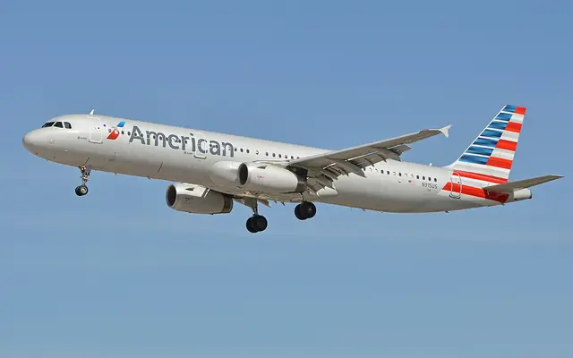
Airbus A321
Alan Wilson from Stilton, Peterborough, Cambs, UK, CC BY-SA 2.0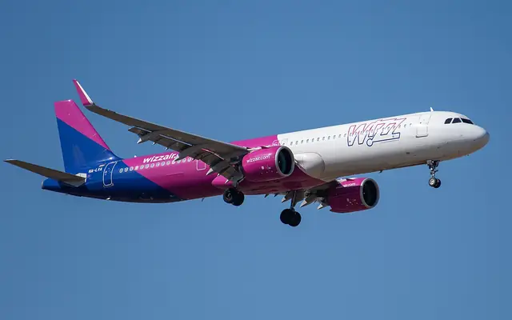
Airbus A321neo
N509FZ, CC BY-SA 4.0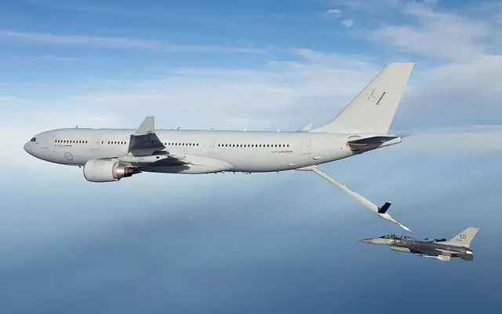
Airbus A330-200
U.S. Air Force photo by Christian Turner, Public domain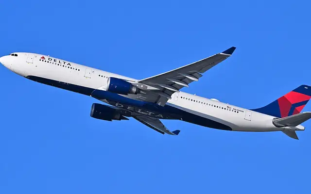
Airbus A330-300
4300streetcar, CC BY 4.0 Airbus A330-800neo
Airbus A330-800neo
New York-air, CC BY-SA 4.0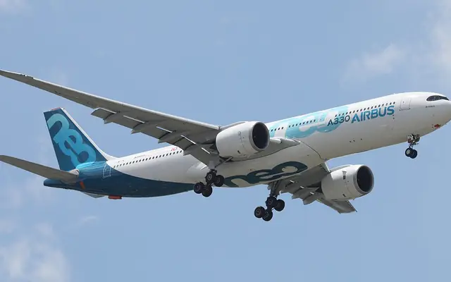
Airbus A330-900neo
New York-air, CC BY-SA 4.0 Airbus A340-200
Airbus A340-200
MarcelX42, CC BY-SA 4.0 Airbus A340-300
Airbus A340-300
MarcelX42, CC BY-SA 4.0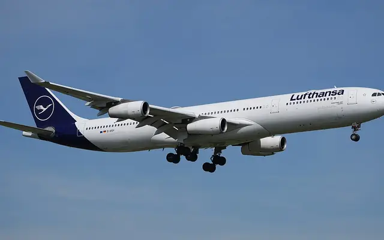
Airbus A340-500
MarcelX42, CC BY-SA 4.0 Airbus A340-600
Airbus A340-600
MarcelX42, CC BY-SA 4.0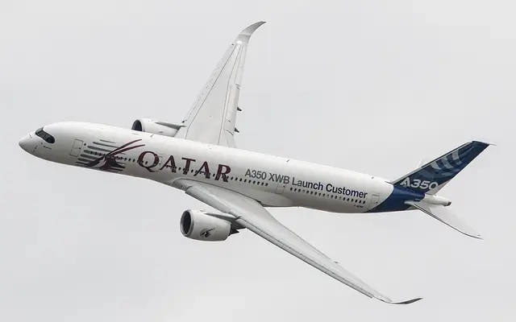
Airbus A350-1000
Steve Lynes, CC BY 2.0 Airbus A350-900
Airbus A350-900
Steve Lynes, CC BY 2.0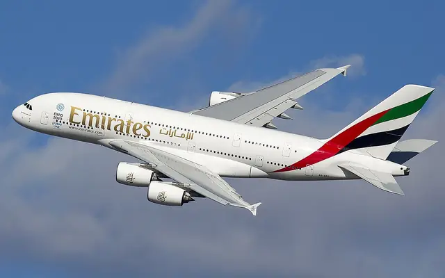
Airbus A380
Maarten Visser from Capelle aan den IJssel, Nederland, CC BY-SA 2.0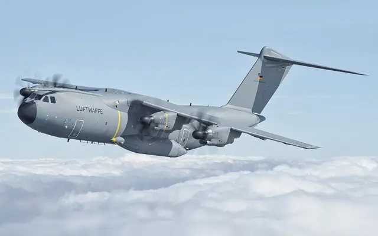
Airbus A400M Atlas
Peng Chen, CC BY-SA 4.0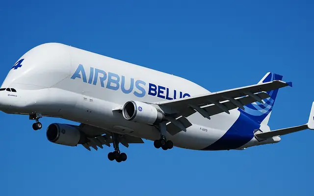
Airbus Beluga
MarcelX42, CC BY-SA 4.0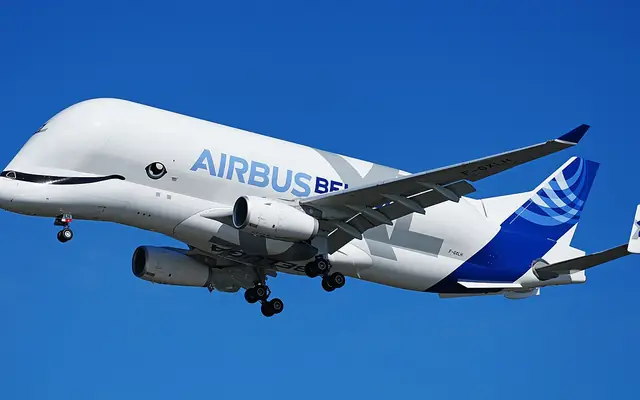
Airbus BelugaXL
MarcelX42, CC BY-SA 4.0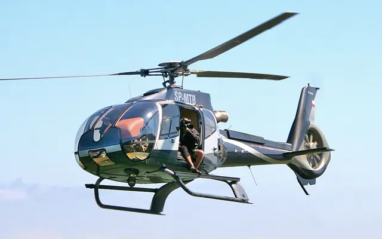
Airbus Helicopters H130
Łukasz Golowanow & Maciej Hypś, Konflikty.pl, CC BY-SA 4.0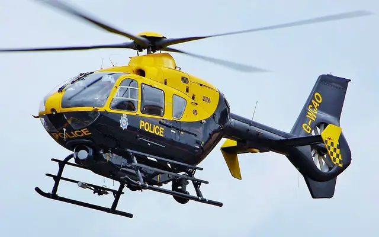
Airbus Helicopters H135 (EC135)
Tim Felce (Airwolfhound), CC BY-SA 2.0 Airbus Helicopters H145 (EC145)
Airbus Helicopters H145 (EC145)
Greg Kramer, CC BY-SA 2.0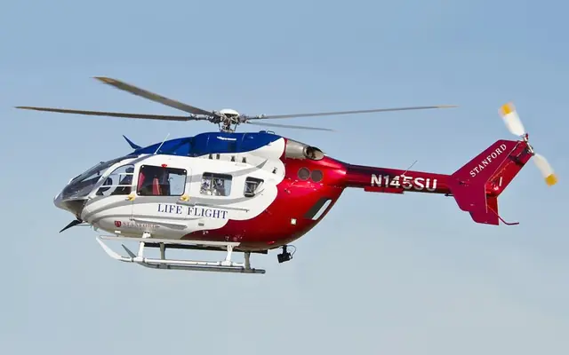
Airbus Helicopters H145M
Greg Kramer, CC BY-SA 2.0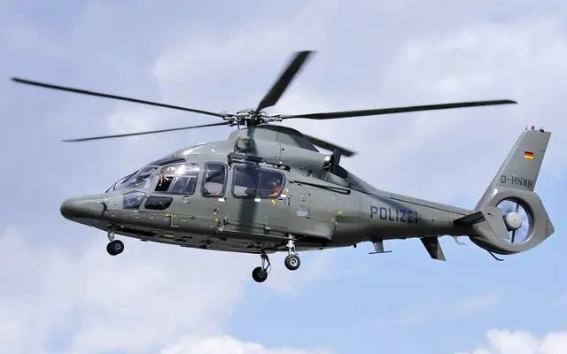
Airbus Helicopters H155
Pedro Aragão, CC BY-SA 3.0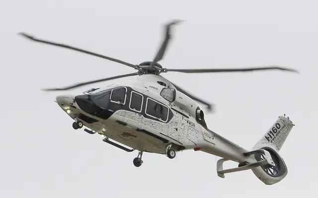
Airbus Helicopters H160
Berg2, CC BY-SA 3.0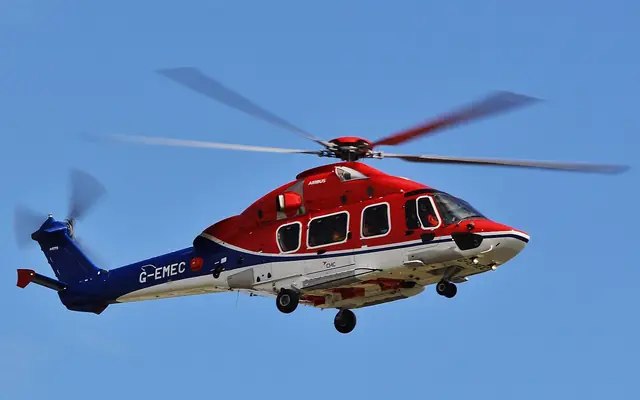
Airbus Helicopters H175
Ronnie Robertson, CC BY-SA 2.0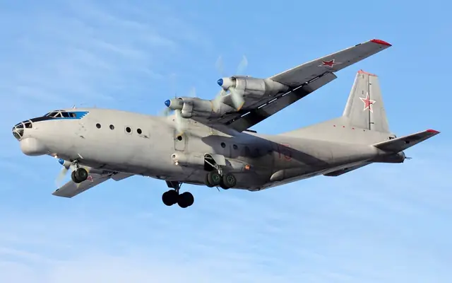
Antonov An-12
Igor Dvurekov, CC BY-SA 3.0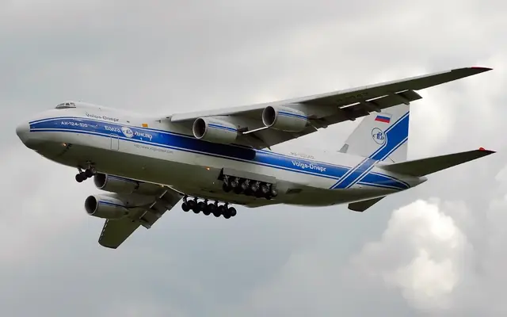
Antonov An-124
Alex Beltyukov, CC BY-SA 3.0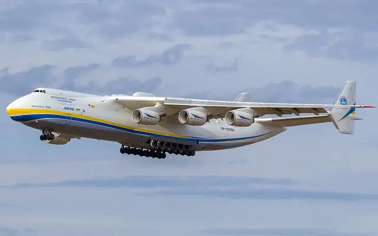
Antonov An-225
Myroslav Kaplun, CC BY-SA 4.0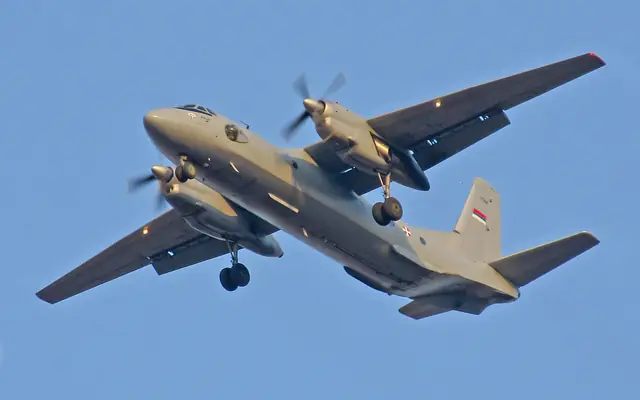
Antonov An-26
Marko Stojkovic, CC BY-SA 3.0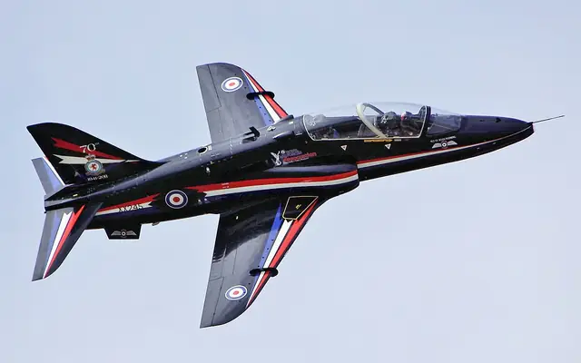
BAE Systems Hawk
Tim Felce (Airwolfhound), CC BY-SA 2.0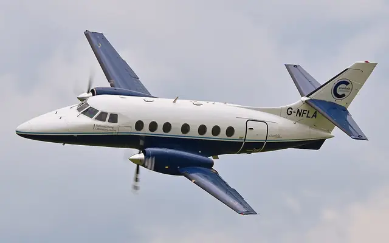
BAe Jetstream 32
Alan Wilson, CC BY-SA 2.0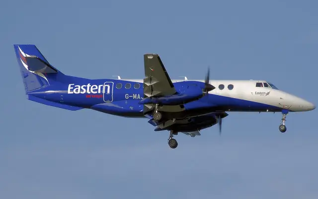
BAe Jetstream 41
Adrian Pingstone (Arpingstone), Public domain Beechcraft King Air 200
Beechcraft King Air 200
海上自衛隊, CC BY 4.0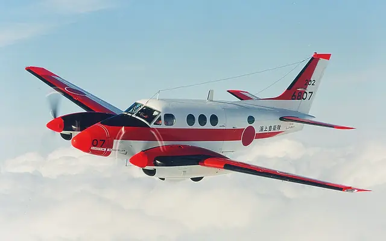
Beechcraft King Air 90
海上自衛隊, CC BY 4.0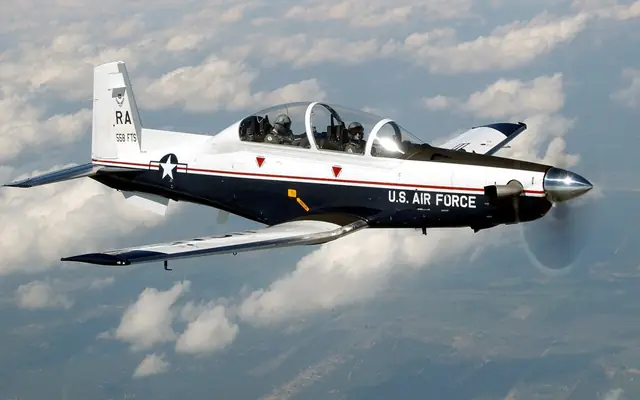
Beechcraft T-6 Texan II
U.S. Air Force photo by Master Sgt. David Richards, Public domain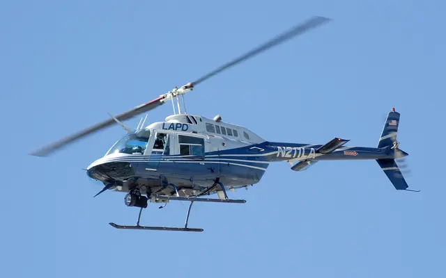
Bell 206 JetRanger / LongRanger
Mfield, Matthew Field, http://www.photography.mattfield.com, CC BY 2.5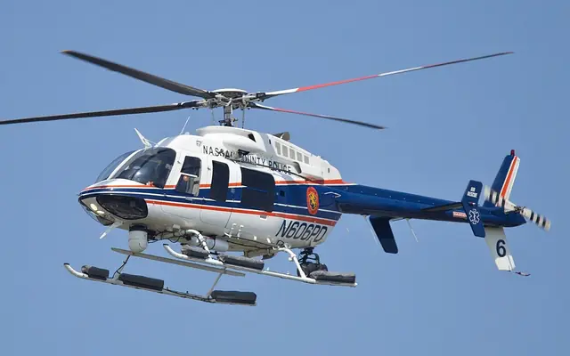
Bell 407
Robert Kowal, CC BY-SA 2.0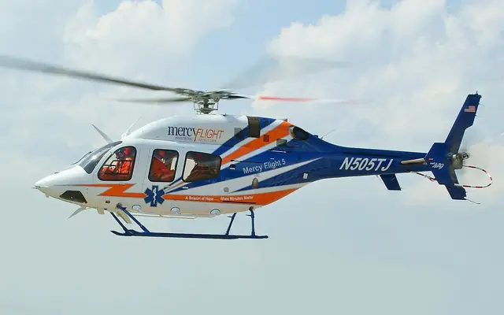
Bell 429 GlobalRanger
Jim Duell, CC BY-SA 4.0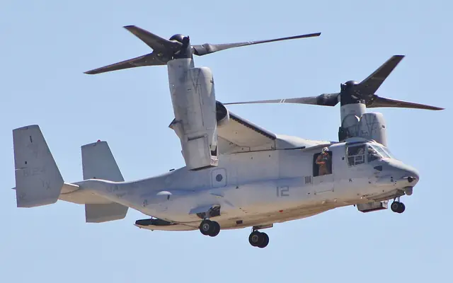
Bell Boeing V-22 Osprey
FOX 52, CC BY-SA 4.0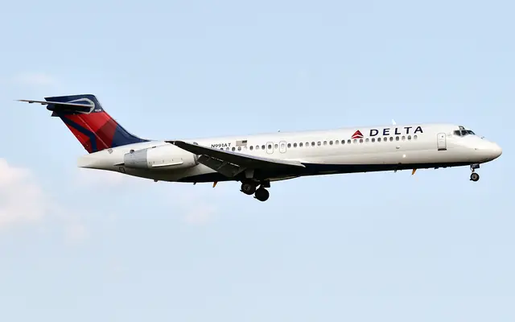
Boeing 717
Anna Zvereva from Tallinn, Estonia, CC BY-SA 2.0 Boeing 737 MAX 10
Boeing 737 MAX 10
KirkXWB, CC BY-SA 4.0 Boeing 737 MAX 7
Boeing 737 MAX 7
KirkXWB, CC BY-SA 4.0 Boeing 737 MAX 8
Boeing 737 MAX 8
KirkXWB, CC BY-SA 4.0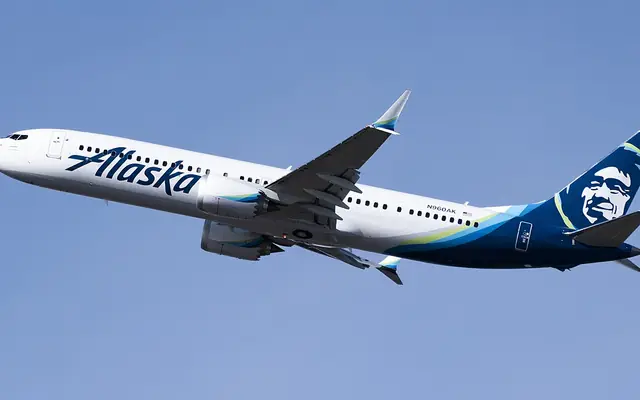
Boeing 737 MAX 9
KirkXWB, CC BY-SA 4.0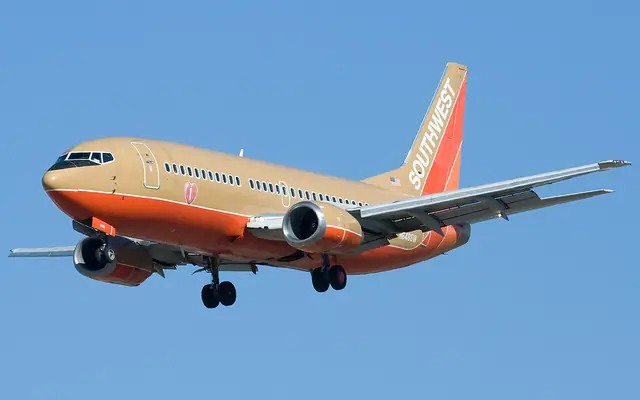
Boeing 737-300
Dylan Ashe from San Jose, USA, CC BY-SA 2.0 Boeing 737-400
Boeing 737-400
Dylan Ashe from San Jose, USA, CC BY-SA 2.0 Boeing 737-500
Boeing 737-500
Dylan Ashe from San Jose, USA, CC BY-SA 2.0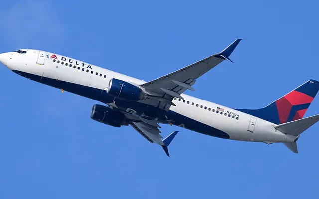
Boeing 737-600
4300streetcar, CC BY 4.0 Boeing 737-700
Boeing 737-700
4300streetcar, CC BY 4.0 Boeing 737-800
Boeing 737-800
4300streetcar, CC BY 4.0 Boeing 737-900
Boeing 737-900
4300streetcar, CC BY 4.0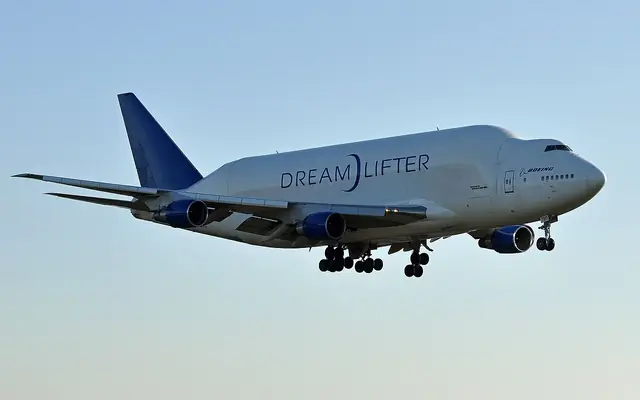
Boeing 747 Dreamlifter
ERIC SALARD from LE GRAND VILLAGE PLAGE, FRANCE, CC BY-SA 2.0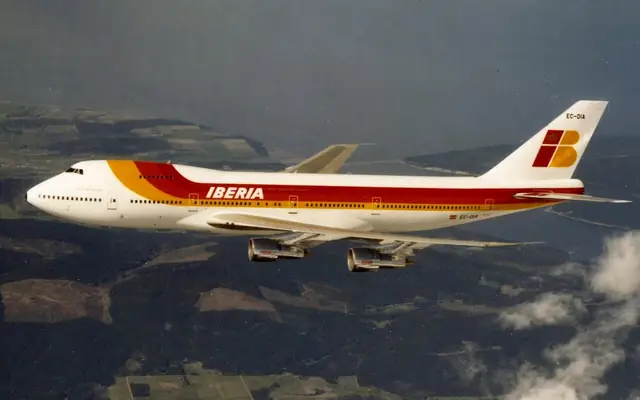
Boeing 747-100
Iberia Airlines, CC BY 2.0 Boeing 747-200
Boeing 747-200
Iberia Airlines, CC BY 2.0 Boeing 747-300
Boeing 747-300
Iberia Airlines, CC BY 2.0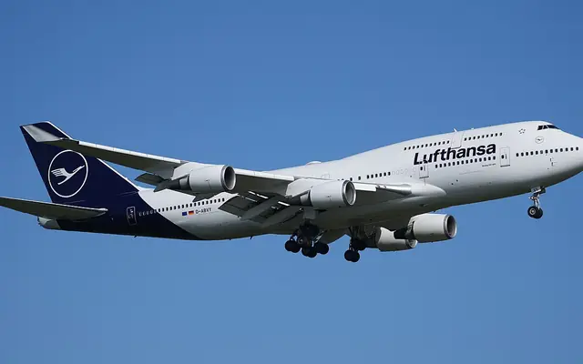
Boeing 747-400
MarcelX42, CC BY-SA 4.0- Boeing 747-8
Juke Schweizer, CC BY-SA 4.0 - Boeing 757-200
4300streetcar, CC BY 4.0  Boeing 757-300
Boeing 757-300
4300streetcar, CC BY 4.0 Boeing 767-200
Boeing 767-200
Richard Snyder from San Jose, CA, United States of America, CC BY-SA 2.0- Boeing 767-300 / 767-300ER
Richard Snyder from San Jose, CA, United States of America, CC BY-SA 2.0  Boeing 767-400
Boeing 767-400
Richard Snyder from San Jose, CA, United States of America, CC BY-SA 2.0 Boeing 777-200 / 777-200ER
Boeing 777-200 / 777-200ER
Aero Icarus from Zürich, Switzerland, CC BY-SA 2.0 Boeing 777-200LR
Boeing 777-200LR
Aero Icarus from Zürich, Switzerland, CC BY-SA 2.0- Boeing 777-300
Aero Icarus from Zürich, Switzerland, CC BY-SA 2.0  Boeing 777-300ER
Boeing 777-300ER
Aero Icarus from Zürich, Switzerland, CC BY-SA 2.0 Boeing 777-8
Boeing 777-8
Dan Nevill from Seattle, WA, United States, CC BY 2.0- Boeing 777-9
Dan Nevill from Seattle, WA, United States, CC BY 2.0  Boeing 777F
Boeing 777F
Aero Icarus from Zürich, Switzerland, CC BY-SA 2.0- Boeing 787-10
pjs2005 from Hampshire, UK, CC BY-SA 2.0  Boeing 787-8
Boeing 787-8
pjs2005 from Hampshire, UK, CC BY-SA 2.0 Boeing 787-9
Boeing 787-9
pjs2005 from Hampshire, UK, CC BY-SA 2.0- Boeing AH-64 Apache
"Photo Courtesy of U.S. Army", by Tech. Sgt. Andy Dunaway, Public domain - Boeing B-52 Stratofortress
Airman 1st Class Victor J. Caputo, Public domain - Boeing C-17 Globemaster III
U.S. Air Force, Public domain - Boeing CH-47 Chinook
Sgt. Steven Galimore, CC0  Boeing E-3 Sentry
Boeing E-3 Sentry
Senior Airman Roslyn Ward, Public domain- Boeing E-3 Sentry
Senior Airman Roslyn Ward, Public domain - Boeing E-6 Mercury
USAF Greg L. Davis, Public domain - Boeing E-7 Wedgetail
US Air Force photo by Richard Gonzales, Public domain - Boeing KC-135 Stratotanker
U.S. Air Force photo/Tech. Sgt. Angelique Perez, Public domain - Boeing KC-46 Pegasus
USAF Christopher Okula, Public domain - Boeing RC-135
U.S. Air Force photo by Master Sgt. Lance Cheung, Public domain  Bombardier CRJ1000
Bombardier CRJ1000
Mark Harkin, CC BY 2.0- Bombardier CRJ200
ERIC SALARD from PARIS, FRANCE, CC BY-SA 2.0 - Bombardier CRJ700
Mark Harkin, CC BY 2.0  Bombardier CRJ900
Bombardier CRJ900
Mark Harkin, CC BY 2.0- Bombardier Challenger 300
Igor Dvurekov, CC BY-SA 3.0  Bombardier Challenger 350
Bombardier Challenger 350
Igor Dvurekov, CC BY-SA 3.0- Bombardier Challenger 600
Maarten Visser from Capelle aan den IJssel, Nederland, CC BY-SA 2.0 - Bombardier Global 5000
Wo st 01, CC BY-SA 3.0 de  Bombardier Global Express
Bombardier Global Express
Wo st 01, CC BY-SA 3.0 de- COMAC C919
N509FZ, CC BY-SA 4.0 - Cessna 152
MilborneOne, CC BY-SA 3.0 - Cessna 182 Skylane
Adrian Pingstone (Arpingstone), Public domain - Cessna 208 Caravan
Lt. Col. Scott Voskovitch, Public domain  Cessna Citation CJ2
Cessna Citation CJ2
Alf van Beem, CC0- Cessna Citation CJ3
Alf van Beem, CC0  Cessna Citation CJ4
Cessna Citation CJ4
Alf van Beem, CC0- Cessna Citation Longitude
Dltl2010, CC0 - Cessna Citation Mustang
Juergen Lehle, CC BY 3.0 - Cessna Citation V
Adrian Pingstone, Public domain - Cessna Citation X
Tomás Del Coro from Las Vegas, Nevada, USA, CC BY-SA 2.0  Cessna CitationJet
Cessna CitationJet
Alf van Beem, CC0- Cirrus Vision Jet
Markus Eigenheer from Genève, Schweiz, CC BY-SA 2.0 - Concorde
Eduard Marmet, CC BY-SA 3.0 - Daher TBM 700
Michael Mainiero, CC BY-SA 3.0  Daher TBM 900
Daher TBM 900
Michael Mainiero, CC BY-SA 3.0- Dassault Falcon 2000
Wo st 01 at German Wikipedia, CC BY-SA 3.0 - Dassault Falcon 7X
N509FZ, CC BY-SA 4.0  Dassault Falcon 8X
Dassault Falcon 8X
N509FZ, CC BY-SA 4.0- Dassault Falcon 900
Luc Verkuringen, CC BY 3.0 - Dassault Rafale
Tim Felce (Airwolfhound), CC BY-SA 2.0 - De Havilland Dash 8-100
MarcelX42, CC BY-SA 4.0  De Havilland Dash 8-200
De Havilland Dash 8-200
MarcelX42, CC BY-SA 4.0 De Havilland Dash 8-300
De Havilland Dash 8-300
MarcelX42, CC BY-SA 4.0 De Havilland Dash 8-400
De Havilland Dash 8-400
MarcelX42, CC BY-SA 4.0- Diamond DA40
bomberpilot, CC BY-SA 2.0 - Diamond DA42
Estormiz, CC0 - Diamond DA62
Anna Zvereva from Tallinn, Estonia, CC BY-SA 2.0 - Dornier 328JET
Aero Icarus from Zürich, Switzerland, CC BY-SA 2.0 - Elbit Hermes 900
Ronite, CC BY-SA 4.0  Embraer E170
Embraer E170
Richard Vandervord, CC BY-SA 4.0 Embraer E175
Embraer E175
Richard Vandervord, CC BY-SA 4.0 Embraer E175 (long wing)
Embraer E175 (long wing)
Richard Vandervord, CC BY-SA 4.0- Embraer E190
Richard Vandervord, CC BY-SA 4.0 - Embraer E190-E2
Valentin Hintikka from Finland, CC BY 2.0  Embraer E195
Embraer E195
Richard Vandervord, CC BY-SA 4.0 Embraer E195-E2
Embraer E195-E2
Valentin Hintikka from Finland, CC BY 2.0- Embraer Legacy 450
Markus Eigenheer from Genève, CC BY-SA 2.0  Embraer Praetor 600
Embraer Praetor 600
Markus Eigenheer from Genève, CC BY-SA 2.0- Fokker 100
Laurent ERRERA from L'Union, France, CC BY-SA 2.0 - Fokker 70
Alf van Beem, CC0 - General Atomics MQ-9 Reaper
Lt. Col. Leslie Pratt, Public domain - General Dynamics F-16
Master Sgt. Andy Dunaway, Public domain - Grob G 115 (Tutor)
Alan Wilson, CC BY-SA 2.0 - Grumman C-2 Greyhound
US Navy, Public domain - Gulfstream G280
flybyeigenheer, CC BY-SA 2.0 - Gulfstream G600
Dontenphotography, CC BY-SA 4.0 - Gulfstream G650
Rob Hodgkins, CC BY-SA 2.0 - Gulfstream IV
NOAA; http://www.photolib.noaa.gov/aboutc.html, Public domain - Learjet 45
Laurent ERRERA from L'Union, France, CC BY-SA 2.0 - Learjet 60
Adrian Pingstone, Public domain - Learjet 75
Markus Eigenheer from Genève, Schweiz, CC BY-SA 2.0 - Leonardo AW101 Merlin
Gian Marco Anzellotti, CC BY 2.0 - Leonardo AW109
Tim Felce, CC BY-SA 2.0 - Leonardo AW139
Contando Estrelas, CC BY-SA 4.0 - Leonardo AW169
Adrian, CC BY-SA 4.0 - Leonardo AW189
Airwolfhound, CC BY-SA 2.0 - Lockheed C-130 Hercules
U.S. Air Force photo by Tech. Sgt. Howard Blair, Public domain - Lockheed C-130J Super Hercules
USAF, Public domain - Lockheed C-5M Super Galaxy
U.S. Air Force photo by Brett Snow, Public domain - Lockheed L-1011 TriStar
Aero Icarus from Zürich, Switzerland, CC BY-SA 2.0 - Lockheed Martin F-22 Raptor
Master Sgt. Andy Dunaway, Public domain - Lockheed Martin F-35 Lightning II
U.S. Air Force photo by Master Sgt. Donald R. Allen, Public domain - Lockheed P-3 Orion
海上自衛隊, CC BY-SA 4.0 - McDonnell Douglas DC-10
Danielkang7744 at English Wikipedia, Public domain - McDonnell Douglas DC-9
Anthony92931, CC BY-SA 3.0 - McDonnell Douglas F-15
Airman 1st Class Matthew Seefeldt, Public domain - McDonnell Douglas MD-11
Björn Strey, CC BY-SA 2.0  McDonnell Douglas MD-82
McDonnell Douglas MD-82
AKS.9955, CC0 McDonnell Douglas MD-83
McDonnell Douglas MD-83
AKS.9955, CC0- McDonnell Douglas MD-88
AKS.9955, CC0 - Northrop Grumman RQ-4 Global Hawk / MQ-4C Triton
U.S. Air Force photo by Bobbi Zapka, Public domain - Pilatus PC-21
Bidgee, CC BY-SA 3.0 au - Pilatus PC-24
Stephan Widmer, CC BY-SA 2.0 - Piper PA-28 Cherokee
Mike Burdett, CC BY-SA 2.0 - Robinson R22
Jeroen Stroes Aviation Photography, CC BY 2.0 - Robinson R44
D. Miller, CC BY 2.0 - Saab 2000
ISORauscht, CC BY-SA 4.0 - Saab 340
Ronnie Robertson, CC BY-SA 2.0 - Sikorsky S-76
Contando Estrelas from Vigo, España / Spain, CC BY-SA 2.0 - Sikorsky S-92
Ronnie Robertson, CC BY-SA 2.0 - Sikorsky UH-60 Black Hawk
147th Aviation Regiment, Public domain - Sukhoi Superjet 100
SuperJet International, CC BY-SA 2.0
_F-GPYK_-_MSN_537_(10276128103).jpg){kind=link}
_ATR.72-212A(500)_FlyFireFly_TLS_30AUG11_(6097869500)_(cropped).jpg){kind=link}
_in_flight_(1).jpg){kind=link}
.jpg){kind=link}
.jpg){kind=link}


.jpg){kind=link}

.jpg){kind=link}
.jpg){kind=link}
_(28915135713).jpg){kind=link}

_%E2%80%98N915US%E2%80%99_American_Airlines_(28442733186).jpg){kind=link}
.jpg){kind=link}
.jpg){kind=link}


.jpg){kind=link}

_(cropped).jpg){kind=link}
.jpg){kind=link}
.jpg){kind=link}
.jpg){kind=link}
.jpg){kind=link}
.jpg){kind=link}


.jpg){kind=link}
.jpg){kind=link}


.jpg){kind=link}

.jpg){kind=link}


.jpg){kind=link}

.jpg){kind=link}


_Dreamlifter_-_PAE_(19833251496).jpg){kind=link}

.jpg){kind=link}


_(cropped).jpg){kind=link}
_(cropped).jpg){kind=link}

.jpg){kind=link}


_conducts_a_mission.jpg){kind=link}

.jpg){kind=link}

.jpg){kind=link}

.jpg){kind=link}
.jpg){kind=link}

.jpg){kind=link}

.jpg){kind=link}


.jpg){kind=link}


.jpg){kind=link}
.jpg){kind=link}


.jpg){kind=link}
.jpg){kind=link}

.jpg){kind=link}
.jpg){kind=link}
.jpg){kind=link}

.jpg){kind=link}


.jpg){kind=link}
_PH-OFN_(10676665315).jpg){kind=link}

.jpg){kind=link}

_Squadron.jpg){kind=link}
.jpg){kind=link}
.jpg){kind=link}

_(cropped).jpg){kind=link}
.jpg){kind=link}
_G-ZXZX_-_MSN_45-005_(5590120278).jpg){kind=link}

.jpg){kind=link}
.jpg){kind=link}

.jpg){kind=link}
.jpg){kind=link}
.jpg){kind=link}


.jpg){kind=link}
.jpg){kind=link}
.jpg){kind=link}
.jpg){kind=link}

.JPG){kind=link}


_Pilatus_PC-21_taking_off_for_the_RAAF_Roulettes_display_at_the_2023_Australian_International_Airshow.jpg){kind=link}
_(cropped).jpg){kind=link}

.jpg){kind=link}
.jpg){kind=link}

.jpg){kind=link}
.jpg){kind=link}
.jpg){kind=link}

_(cropped).jpg){kind=link}
Spot a mistake in a credit? Email me and I will fix it.